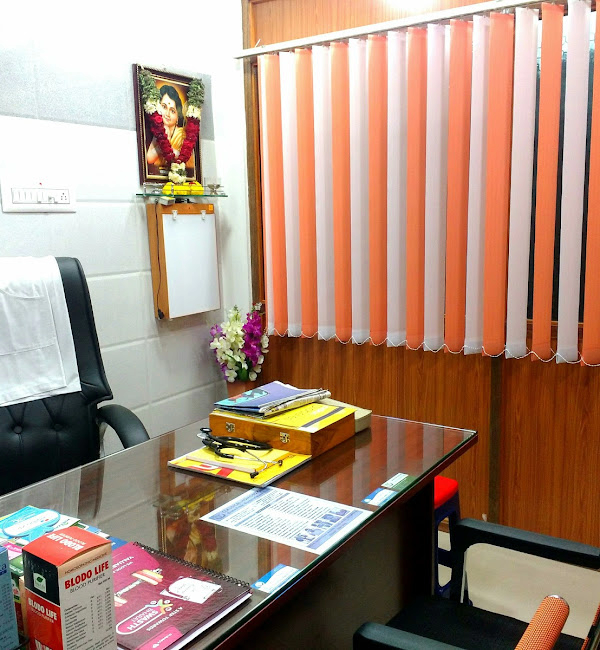

Experience the Holistic Care at Classical Homeocare
Homeopathy is a holistic system of medicine that aims to stimulate the body's natural healing processes. Based on the principle of "like cures like," it uses highly diluted substances to trigger the body's own ability to heal.
Why Patients Choose Us
Certified Expertise
Dr. D. Ahilan, BHMS, M.D. (Hom), brings 25+ years of classical homeopathic training to every case.
Gentle, No Side Effects
Remedies are prepared in minute, natural doses — safe for infants, pregnant women, and elderly patients.
Root-Cause Case-Taking
Every visit begins with a detailed case history, treating the person, not just the symptom.
Easy WhatsApp Access
Message us anytime to ask questions, share reports, or book your consultation — no waiting on hold.
What We Treat
Skin Effective treatment for skin conditions including psoriasis, urticaria, vitiligo, eczema, lichen, allergies, and atopic dermatitis — treated with homeopathic medicine and no side effects.
Fistula Homeopathy treats recurring fistula tracks, including cases that persist after surgery, offering a gentle, non-invasive path to complete recovery.
Piles Complete recovery from piles, fissures, and other ano-rectal complaints — without surgery.
Respiratory Effective treatment for respiratory conditions including asthma, allergic rhinitis, pneumonia, bronchitis, acute and chronic tonsillitis, and COPD.
Gall Stones A proven, non-surgical way to dissolve gallbladder stones — no pain, no procedure required.
Women Care Comprehensive care from routine check-ups to complex conditions such as fibroid uterus, endometriosis, PCOS, and irregular periods.
Thyroid Natural regulation of thyroid gland function through targeted homeopathic remedies, without hormone replacement.
Kidney Stone Complete care for recurring renal stones, renal cysts, high creatinine, and other chronic renal conditions, using German homeopathic remedies.
Digestive System Relief for gastric conditions including heartburn, indigestion, bloating, IBS, lactose intolerance, constipation, GERD, peptic ulcer disease, Crohn's disease, and ulcerative colitis.
Patient Stories
Years of chronic skin allergy finally cleared up within a few months of treatment. Dr. Ahilan took the time to understand the root cause, not just the symptoms.
My kidney stones dissolved naturally without any surgery. The medicines were gentle and the guidance throughout was reassuring and clear.
My daughter's asthma attacks have reduced drastically. We finally found a treatment that treats the whole child, not just the wheeze.

Dr. D. Ahilan, BHMS, M.D. (Hom)
25+ Years of Classical Homeopathic Practice
Common Questions
Classical Homeocare
175/1, main road, near Hotel Ashwa Park, Jaheer Reddy Pati, Salem, Tamilnadu 636302
Working Hours